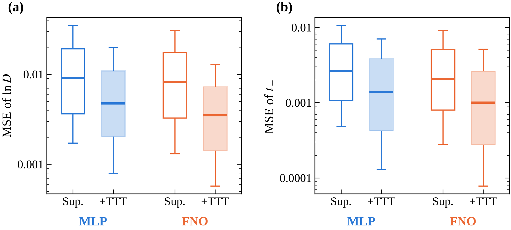
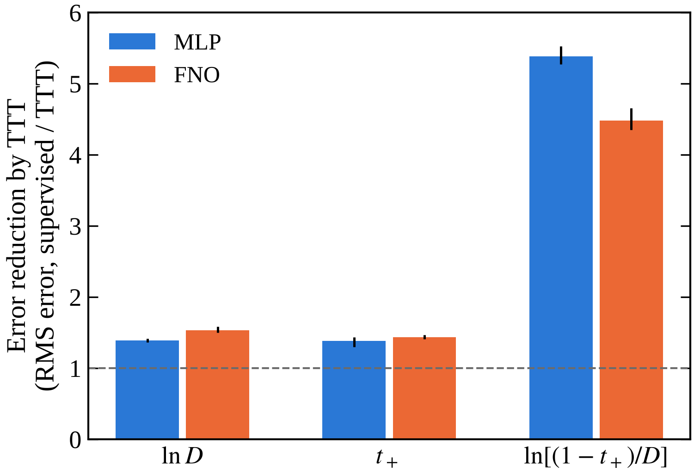
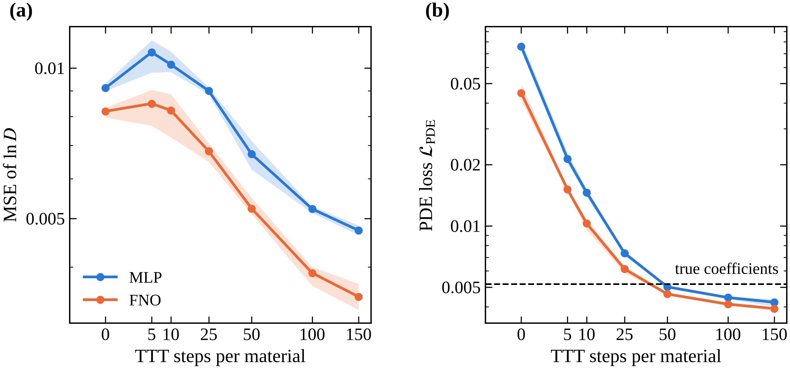
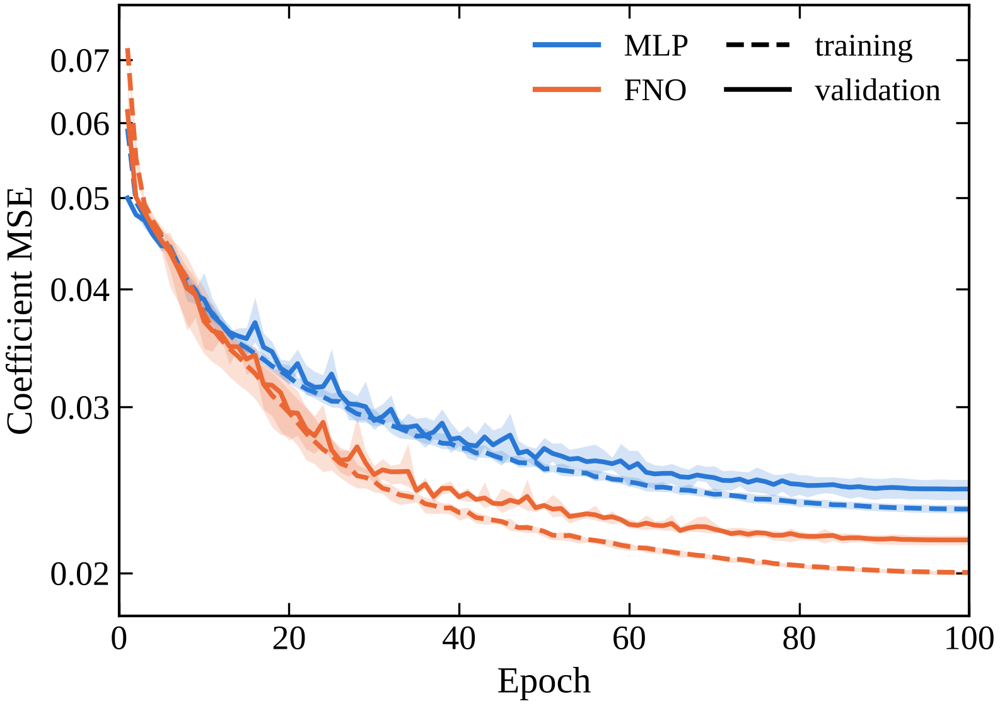
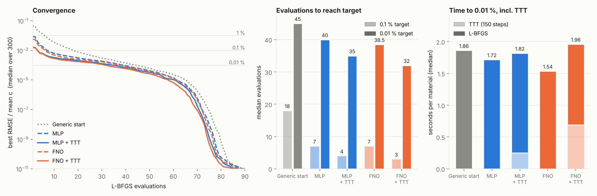
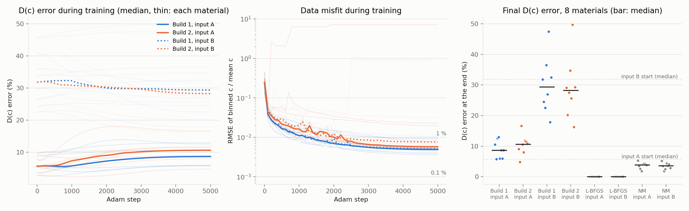
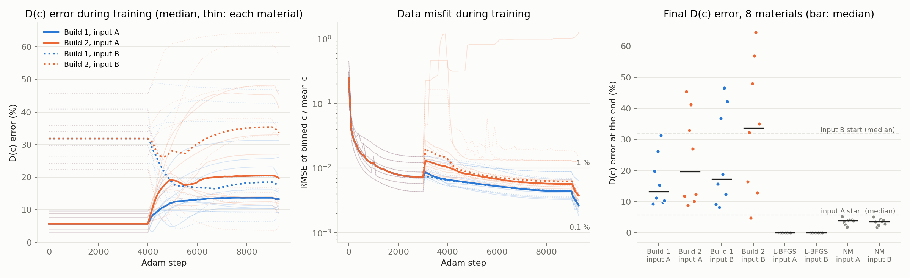
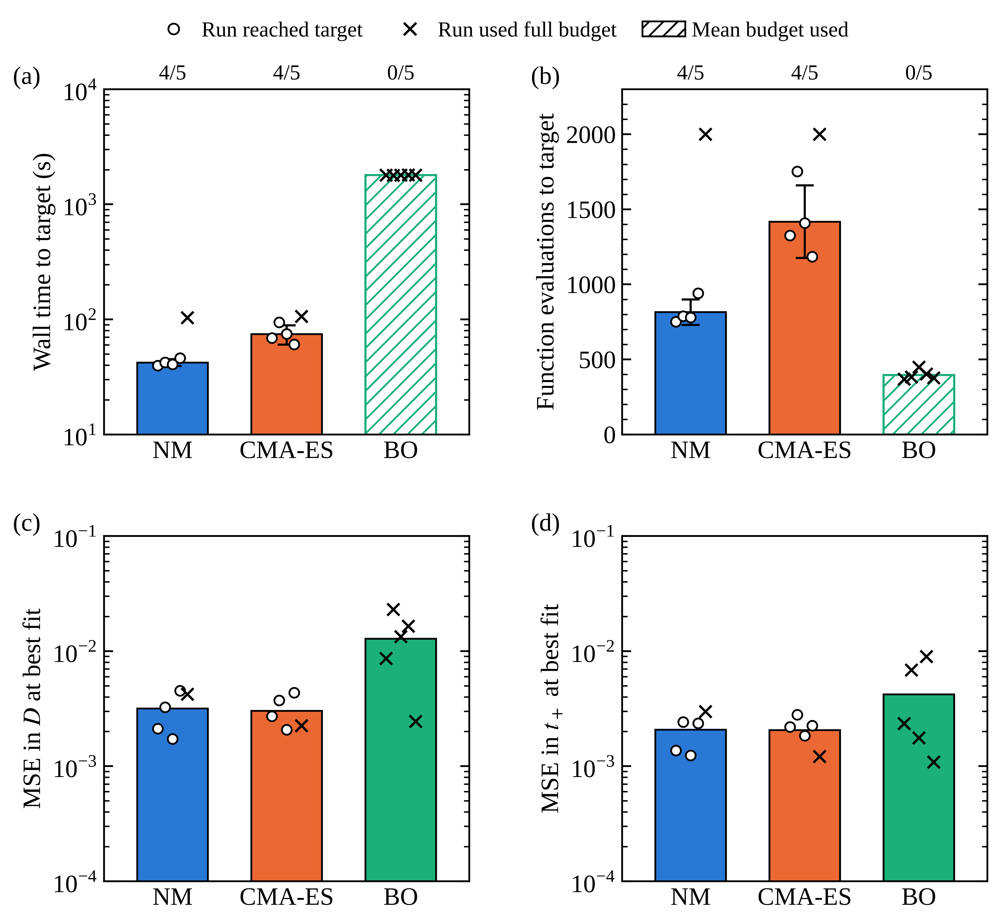

Every result so far for recovering \(D(c)\) and \(t_+(c)\) from \(c(x,t)\), and the networks behind them. Numbers are read from results/*/summary.json and summary.txt on branch Junbo; architectures from the code in surrogate/ and pinn/.
0 %L-BFGS through the differentiable solver recovers \(D\) exactly from either start (300 materials, about 3 s each).
5.5 %FNO + TTT, the best learned estimate, in under a second per material. It is the input-A start for every refinement.
3.4–4.4 %Nelder–Mead and CMA-ES stop at 0.01 % \(c\) misfit, which still leaves \(D\) off by a few percent.
11.6 %Best PINN (data-first, from input B). No PINN variant beats its own FNO + TTT start.
Problem and data
The cell is 1-D, with salt concentration \(c(x,t)\), constant current \(\iota\), and an unknown \(D(c)\) and \(t_+(c)\). Each is a cubic Bernstein curve in \(u = c/2\), so a material is 8 coefficients \(\theta \in [0,1]^8\) (4 for \(\ln D\), 4 for \(t_+\)). \(\alpha(c)\) and \(V(c)\) come from a known density.
Simulation: 40 finite-volume cells, Crank–Nicolson with Newton, 16 steps per frame interval.
Observation: 13 frames (\(t_k = 240\,\mathrm{s} + 960\,\mathrm{s}\cdot k\)) × 20 bins, noise-free, at three currents per material (strata \(k = 0, 2, 4\) of \(\iota \in [0, 5]\)). Frames after a current fails (\(c \notin [10^{-4}, 2]\)) are dropped.
Split: 14,995 materials kept; 10,336 train, 593 validation, 300 test. Every method on this page is scored on those 300 test materials, or on the first 8 of them for the PINNs.
Inputs to the refinement methods:A starts \(\theta\) at a network prediction (FNO + TTT unless noted). B starts at \(\theta = 0.5\), with no learned start.
Main score: \(D\) relative \(L_2\) error (%) over the observed \(c\) window, median over materials.
Unified comparison of every run
Every inverse run recorded on branch Junbo at 1094a3f, scored the same way: the recorded \(\theta\) of each material is compared with the true \(\theta\) over that material’s observed \(c\) window, using the scoring in analysis/metrics.py. The default view puts every method on the same 8 test materials (0–7), which are the only ones the PINNs were run on. Switch to “all materials” to see each run on its full set (300 for the learned nets, L-BFGS, NM and CMA-ES, 30 for BO).
Method
Input
\(n\)
\(D\) err start
\(D\) err end
Better than start
\(t_+\) RMSE end
\(c\) misfit / mean \(c\)
Solver calls or steps
Wall time per material
All values are medians over materials, except “better”, which counts materials whose \(D\) error ended below their start. Green rows have the lowest \(D\) error in their group.
Learned rows use seed 0, the network that produced input A. The TTT row’s start is the supervised prediction of the same network. Earlier tables quoted the mean of 3 seeds (MLP 9.1 %, FNO 8.4 %, FNO + TTT 5.5 %). Inference costs \(7\times10^{-6}\) s (MLP) and \(1.6\times10^{-4}\) s (FNO) per material after a one-time training of 0.4 and 8.9 min.
Solver calls: one L-BFGS call is a forward and an adjoint solve; NM, CMA-ES and BO calls are forward solves. Steps are optimizer steps (TTT: AdamW; PINN: Adam, then L-BFGS where used, all stages).
\(c\) misfit is the RMS misfit to the data over mean \(c\). The learned nets never simulate \(c\), so they have none.
Wall time: the GPU PINNs ran 16 fits per batch on an RTX 4090, so their time is the batch time ÷ 16. JAX CPU PINN fits ran 32 in parallel, one thread each. The data-first stage 1 is cached and shared between runs, so those wall times depend on which run fitted it. Solver runs: L-BFGS on a 4-core cloud machine, NM/CMA-ES/BO on one PC with 8 processes.
Frozen runs: “frozen \(c, v\)” keeps both stage-1 networks fixed and fits only \(\theta\) to the physics. “Frozen \(c\)” keeps the \(c\) network fixed and trains \(v\) and \(\theta\), with \(w_\text{data}=10^{-2}\). Both start from the data-first stage 1 (\(c\) misfit 0.02 %).
What the PINN numbers say. The physics only picks out \(\theta\) when \(c\) is fitted far more accurately than any PINN reaches. Total-loss and staged runs stall at 0.26–0.8 % \(c\) misfit. Fitting \(c\) and \(v\) first brings it to 0.02 % after stage 1, which is the best PINN result so far. When the physics is switched on the misfit rises again to 0.07–0.09 %, and from input A the \(D\) error still ends above its 5.7 % start (3 of 8 improve). Holding the stage-1 networks fixed keeps the misfit at 0.02 % but leaves \(D\) at 13–17 % from either start, so an accurate \(c\) alone is not enough: the physics residual built from a fitted network still does not single out \(\theta\). The solver-based fits reach 0.01 % (NM) or \(10^{-10}\) (L-BFGS).
Learned inference figures

A1. Errors of MLP and FNO, with and without TTT, on the 300 test materials.

A2. Error reduction from TTT, per material.

A6. \(\ln D\) error and PDE loss against TTT step (0–150). The error briefly rises in the first 10 steps before falling.

A4. Supervised training curves, coefficient MSE and the diagnostic PDE loss on validation.
Solver-based and PINN figures

L-BFGS convergence and cost by start, 300 materials. A learned start cuts evaluations to 0.01 % RMSE from 45 to 32–40.

Total-loss PINN (GPU), Builds 1 and 2, inputs A and B, against L-BFGS and NM on the same 8 materials.

Staged PINN, physics weight \(w = 100\). The data-first runs have no figure yet; their numbers are in the table above.
Start-to-end chart, same 8 materials
Median \(D\) error of every refinement run on test materials 0–7, start (hollow) to end (filled), sorted by the end value. Hover a row for its numbers. The table above holds the same values.
startend, better than startend, worse than start
Other recorded experiments
Two more sets of runs are on record. They use a different setup from the table above, so they sit apart from it.
PINN tuning sweep (1 material, total loss)
The 20-variant sweep in results/pinn_sweep on test material 0 (JAX, CPU, 5000 Adam steps) that picked the total-loss defaults. “Truth” holds \(\theta\) at the true value and trains only the networks. \(\phi\) lr is the multiple of the network learning rate; “early” draws residual points from \(s = 0.05\), “observed” from the first frame.
The first benchmark, in results/numerical baselines: the compact model (solver/transport_1d.py, \(\alpha = 1\), \(\bar V = 0.1\), its own coefficient ranges), one material, the same 5 Sobol starts for each method, run to a \(c\) RMSE target. Its error is the MSE of the coefficients, not the \(D\) error above. Budget 2000 calls (BO 400 at 1 % and 0.1 %); at 0.01 % also a 30 min cap.
Target RMSE
Method
Reached
Calls to target
Wall time to target
MSE \(D\) at end
MSE \(t_+\) at end

Compact-model baselines at the 0.01 % target: (a) wall time and (b) solver calls to the target, (c) MSE of \(D\) and (d) of \(t_+\) at the best fit, for each of the 5 starts.
Supervised networks: MLP and FNO
Both map one material’s measured field to the 8 coefficients in one forward pass. They are the same size (about 65k parameters) so the comparison is about structure. Code: surrogate/models.py, surrogate/train.py.
Input features (shared)
12 channels on the 13-frame × 20-bin grid. \(c - 1\) and \(v\) are divided by their training RMS; \(v\) comes from \(c\) through conservation and the volume constraint (surrogate/data.velocity_from_c), with nothing fitted. Frames past the last valid one are zeroed and flagged by the mask.
MLP
\(x\) and \(t\) enter only through position in the flattened vector; the \(t\), \(x\) and broadcast \(\iota\) channels are not used by the MLP.
FNO
Loss
MSE of the 8 coefficients, \(\operatorname{sigmoid}(z)\) vs \(\theta\). No physics in the training loss; the PDE loss is logged on validation only.
Optimizer
AdamW (weight decay 0.01), lr \(10^{-3}\), cosine decay to 0 per step, batch 64, 100 epochs (16,200 steps), one CPU thread.
Checkpoint
Best validation coefficient MSE.
Seeds
3 per architecture; tables give the mean of the seed medians.
After TTT the FNO is lower on 75 % (\(\ln D\)) and 76 % (\(t_+\)) of materials, median error ratio 0.78 / 0.76.
Test-time training (TTT)
TTT adapts the supervised network to one test material using physics only, with no labels. This is the “route 2” stage; it was in the folder named vanilla pinn but it is not a PINN, since no network represents \(c\). Code: pinn/ttt.py, pinn/pde_loss.py.
Learning rate picked from \(\{10^{-5}, 10^{-4}, 10^{-3}\}\) on 100 validation materials with the seed-0 network. TTT cuts the PDE loss from 0.045 to 0.0039 (FNO), below the 0.0052 at the true \(\theta\), so 150 steps already reaches the grid’s floor. It improves 84 % (FNO) and 78 % (MLP) of materials.
PINN builds
One fit per material: networks represent the fields, and \(\theta = \operatorname{sigmoid}(\phi)\) is 8 trainable scalars started at input A or B. One network serves all three currents. Both builds exist in JAX (pinn/jax_pinn.py, CPU) and PyTorch (pinn/torch_pinn.py, CUDA, 16 fits batched); tests/test_torch_pinn.py checks they agree to \(10^{-9}\).
\((2x - 1,\ 2s - 1,\ \iota/5)\), with \(s = \sqrt{t / t_\text{max}}\), \(t_\text{max}\) the material’s last valid frame. \(\sqrt{t}\) resolves the early diffusion layer.
Residual points are redrawn every Adam step, \(x \sim \mathcal{U}[0, 1]\) and \(s \sim \mathcal{U}\big[\sqrt{t_0/t_\text{max}},\, 1\big]\), so the window starts at the first observed frame. L-BFGS stages use one fixed set.
PINN training schedules
Three schedules were tried on the same networks. Bar lengths are drawn to step count within each row, except stage 1 of the data-first schedule, which is compressed (30,000 steps).
Total loss was picked by a 20-variant sweep on one material (results/pinn_sweep). Every variant moved \(D\) away from the truth from input A, and with \(\theta\) held at the truth the loss was no lower than at a wrong \(\theta\).
Staged lowered \(c\) misfit to 0.26–0.40 %, which helped from B with Build 1 (5 of 8 better) and hurt from A. With \(w = 1\) it was worse everywhere.
Data-first fits \(c\) and \(v\) to the data until converged before the physics sees them. A smaller data weight in stage 2 lets \(c\) drift from the data (0.07 → 0.24 % misfit) without improving \(D\).
Frozen networks (after the same data-first stage 1) skip the joint network update: either only \(\theta\) trains, or \(v\) and \(\theta\) train with \(c\) fixed. The \(c\) misfit stays at 0.02 %, but \(D\) ends at 16.0 / 16.7 % (\(\theta\) only) and 13.2 / 15.8 % (\(c\) fixed) from A / B.
Still to do
Item
Status
Note
Hessian identifiability per run condition
to do
Next step. L-BFGS through the solver gives the Hessian at the exact fit.
Multi-current round (1 vs 3 currents)
to do
All results above use 3 currents per material. Open question whether the benchmark should use 1.
Noise round
to do
All results above are noise-free.
PINN accuracy
partial
Would need about 0.01 % \(c\) misfit with physics on. Data-first run has no figure yet.
Repo housekeeping
to do
README folder names (results/stage2 is vanilla pinn, baselines is numerical baselines); rename vanilla pinn, since it holds MLP/FNO + TTT.